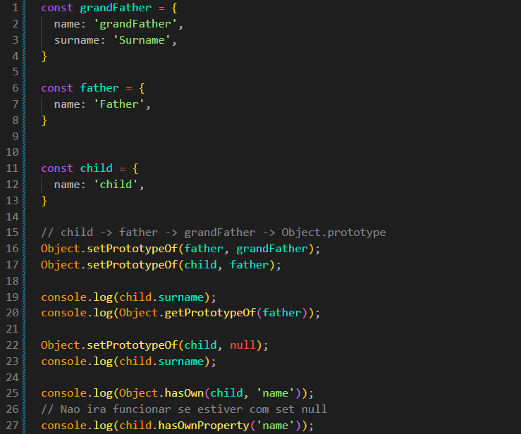
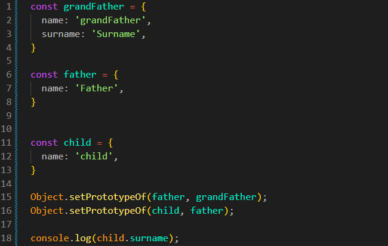

Prototypal Inheritance
Intro
Agora iremos começar a explorar a herança em JS.
Agora iremos começar a explorar a herança em JS.
JS:

Iremos começar criando dois objetos, sendo eles: father e child:
const father = {
name: 'Father',
surname: 'Surname',
}
const child = {
name: 'Child',
}
Podemos observar que nosso child não possui a propriedade surname.
Se tentarmos acessar o surname de child: console.log(child.surname)
Teremos como resultado undefined. Porém, podemos estabelecer uma relação de herança entre objetos. Para isso, podemos usar o método Object.setPrototypeOf().
Usamos esse método para definir o protótipo de um objeto. O primeiro parâmetro é o objeto que irá receber o protótipo e o segundo é o objeto que será utilizado como seu protótipo.
A herança por protótipos funciona principalmente quando tentamos ler uma propriedade de um objeto e ela não está presente nele. Nesse caso, o JavaScript procura essa propriedade no seu protótipo.
A herança também pode ser encadeada, fazendo com que um objeto herde de outro que, por sua vez, herda de um terceiro. Exemplo:
const grandFather = {
name: 'GrandFather',
surname: 'Surname',
}
const father = {
name: 'Father',
}
const child = {
name: 'Child',
}
Object.setPrototypeOf(father, grandFather);
Object.setPrototypeOf(child, father);
console.log(child.surname);

Dessa forma, quando procuramos uma propriedade, o JavaScript pode seguir a cadeia de protótipos: child → father → grandFather → Object.prototype → null.
Usamos esse método para descobrir qual é o protótipo atual de um objeto. Exemplo:
console.log(Object.getPrototypeOf(father));
Nesse exemplo, o resultado será o objeto grandFather, pois definimos grandFather como protótipo de father.
Uma característica importante dos protótipos é que eles são utilizados na busca de propriedades.
Quando tentamos ler uma propriedade que não existe diretamente no objeto, o JavaScript procura essa propriedade na cadeia de protótipos.
Porém, quando atribuímos uma nova propriedade, ela normalmente é criada no próprio objeto. Por exemplo:
child.surname = 'Smith';
Nesse caso, surname será criada diretamente em child. Ela não altera a propriedade surname existente no protótipo.
Se excluirmos essa propriedade:
delete child.surname;
A propriedade será removida de child. Porém, se existir uma propriedade surname em seu protótipo, ela continuará sendo encontrada através da cadeia de protótipos.
Também podemos remover o protótipo de um objeto usando Object.setPrototypeOf(child, null).
Ao fazer isso, child não terá mais um protótipo. Portanto, ele também não terá acesso às propriedades e métodos que seriam encontrados através dessa cadeia.
Por exemplo, métodos como hasOwnProperty() normalmente são encontrados através de Object.prototype. Se definirmos o protótipo como null, esse método não estará mais disponível diretamente em child.
Isso acontece porque cortamos a cadeia de protótipos. Arrays, strings e outros objetos também utilizam protótipos para obter diversos de seus métodos.